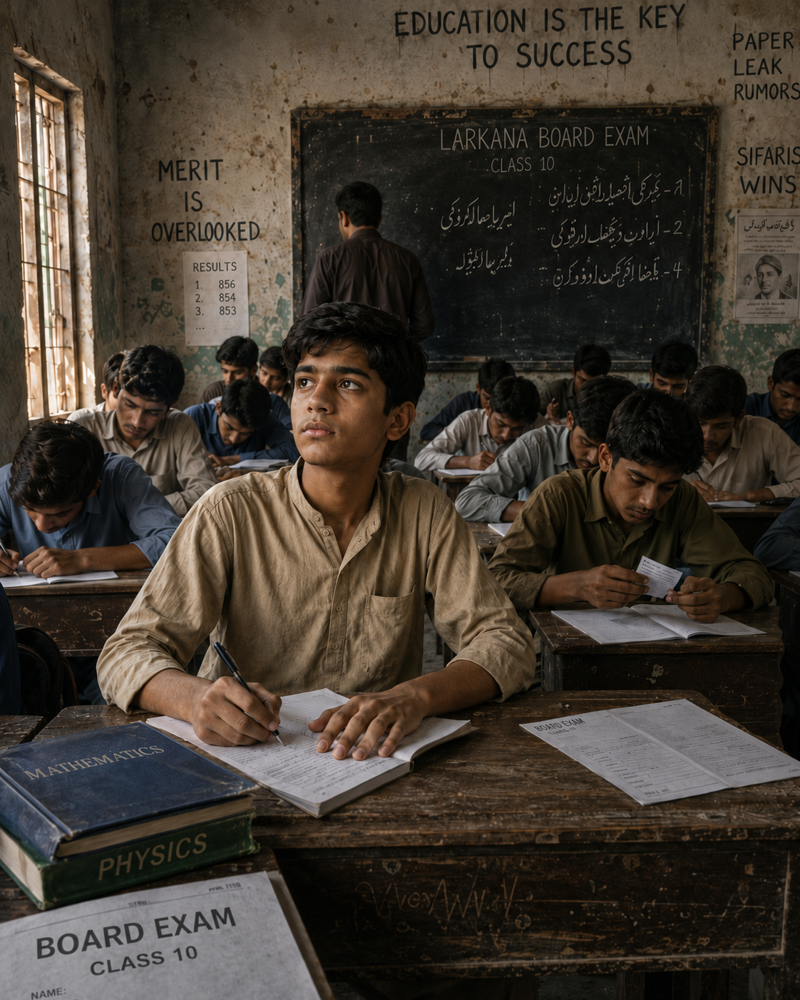
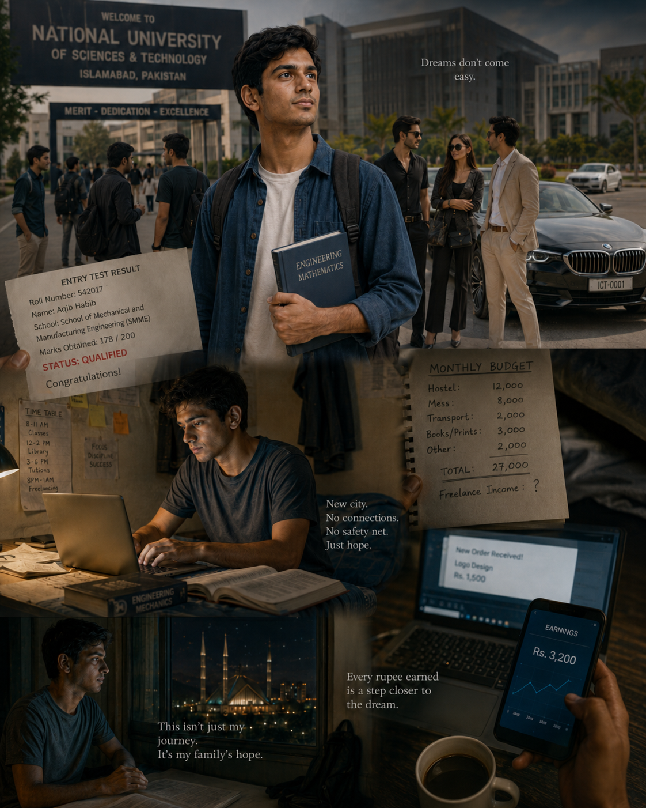
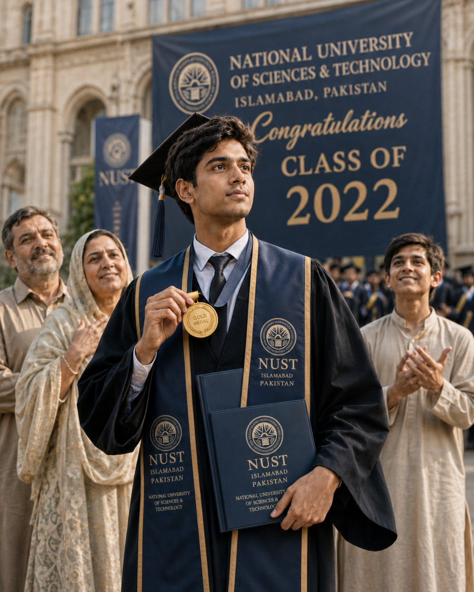
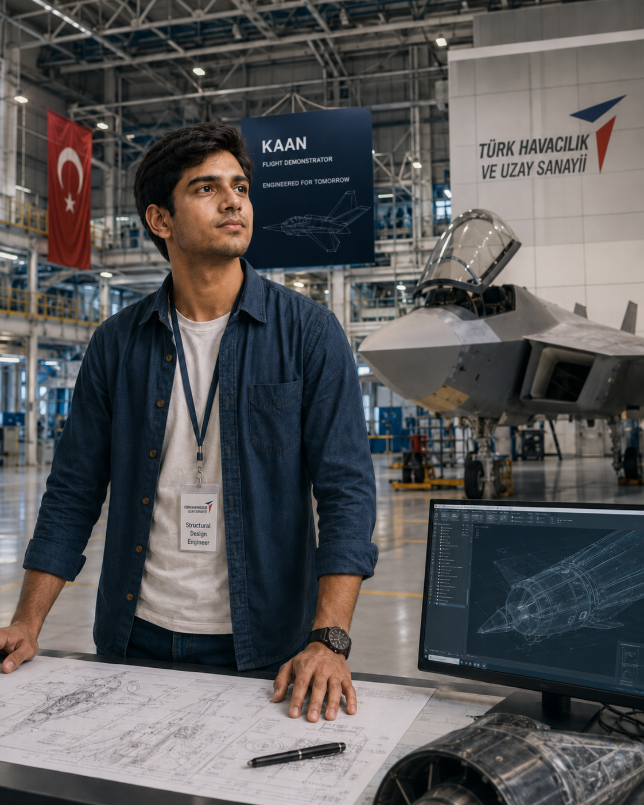
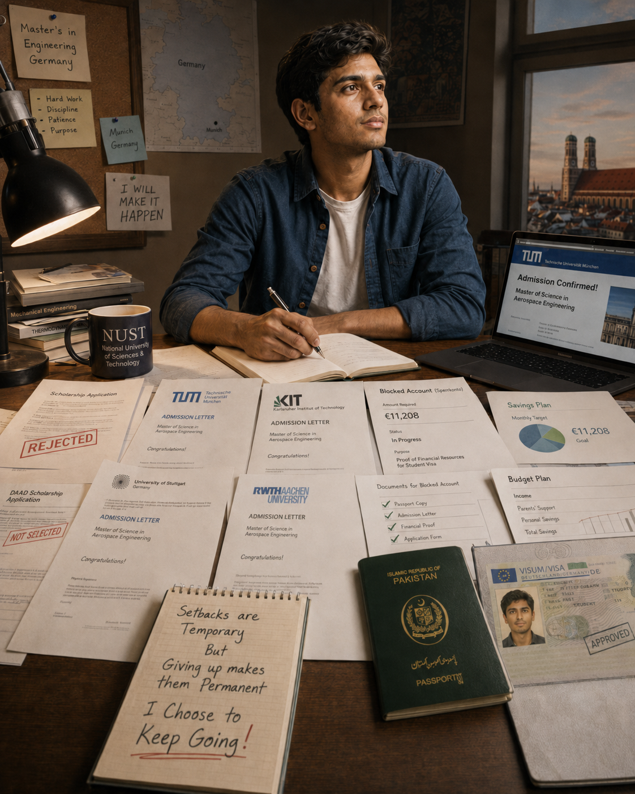
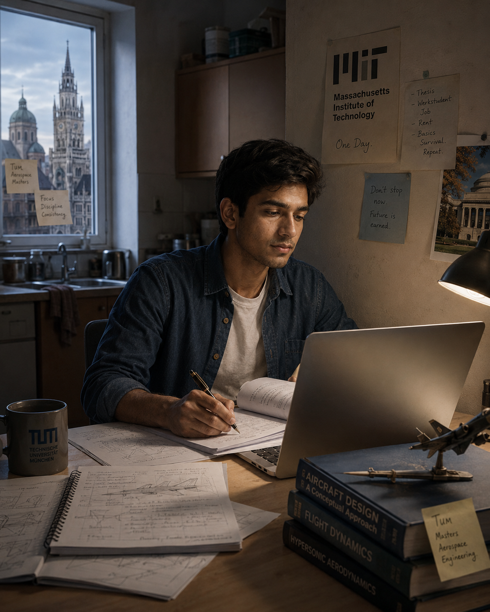
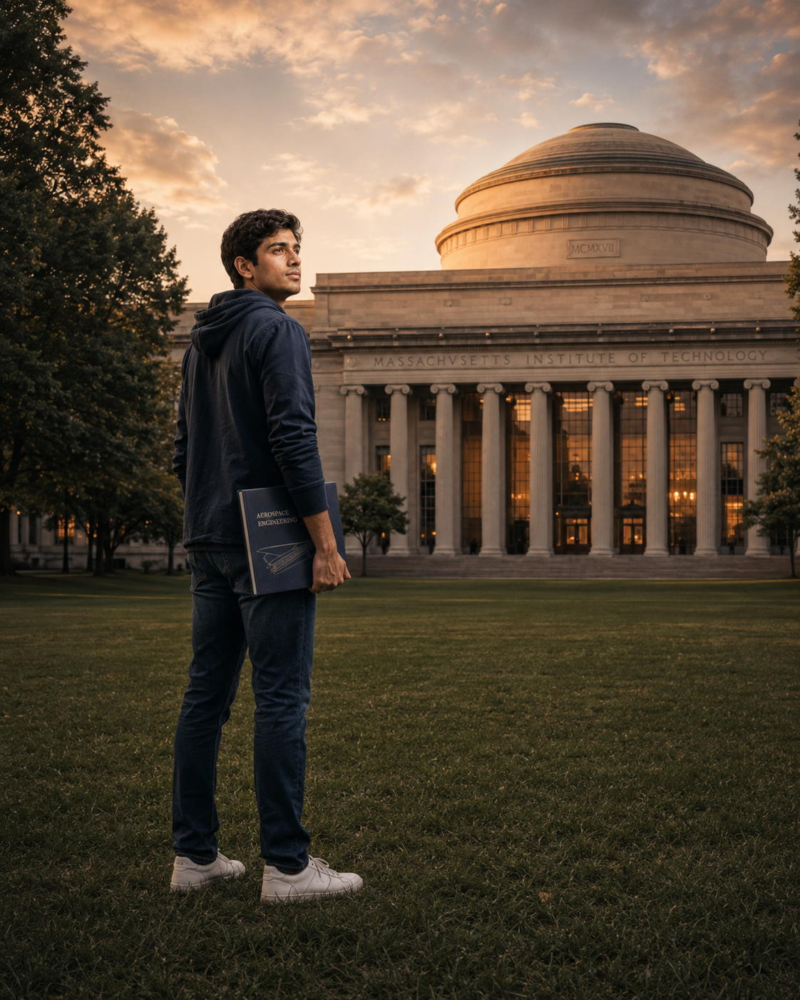

I was born in August, 2000 in a small village near Larkana, Sindh, into a family whose life was simple, difficult and honest.
We were not destitute, but comfort was never guaranteed. We had no car and few luxuries; we travelled by motorcycle, rickshaw or whatever was available. My father sold shoes and clothes in the local market. My mother, a homemaker, held our family together with patience, sacrifice and faith.
Looking back, I am grateful for that beginning. It did not give me privilege, but it gave me something I would need again and again: resilience.

A small world.
A larger curiosity.
As a child, I loved learning long before I understood where education could lead. I knew nothing about A-levels, MIT, Stanford or international scholarships. My world was small; my desire to learn was not.
School often rewarded memorisation more than curiosity, creativity or practical thinking. Around me, I saw an exam culture shaped by favouritism and unfair practices—one where many students believed marks could be bought instead of earned.
I could have accepted that. Something in me refused. I studied consistently and performed strongly in the entrance exam, earning admission to the National University of Sciences and Technology, one of Pakistan's leading engineering universities. That result changed the direction of my life.

Leaving home.
Learning to survive.
Getting into NUST was a dream. It was also the beginning of a different struggle. I did not receive a scholarship, despite explaining that my family could not easily afford the fees. Somehow, they found a way. I still do not fully know how.
I arrived in Islamabad from a village and entered a world where many students had better schools, cars, expensive clothes, international exposure and a confidence I had never been taught to carry. I often felt out of place. I struggled to make friends, endured moments of ridicule and carried financial pressure quietly. I also found good people who saw me for who I was—and remain my friends today.
To pay for tuition, food and daily life, I freelanced and took part-time work. I studied by day and worked late whenever necessary. It was not glamorous. It was survival. But I did not stop.

Proof that a beginning
does not set a limit.
Four years after leaving home—after financial pressure, isolation, self-doubt and countless late nights—I graduated with a 3.8 CGPA and received a university gold medal.
The medal was not mine alone. It belonged to my parents and the sacrifices my family made without ceremony. It belonged to every night I worked when I wanted to sleep, every moment I felt I did not fit, and every time I chose discipline over giving up.
For someone from my background, graduation was not simply the end of a degree. It was evidence that where I began did not define how far I could go.

From village classrooms
to a fighter programme.
After graduation, I joined Turkish Aerospace Industries and worked on the flight demonstrator of KAAN, Türkiye's fighter aircraft programme. For a young engineer from Larkana, contributing to real aerospace work on a national aircraft programme was an extraordinary milestone.
I learned a great deal, but eventually felt my growth slowing. I wanted deeper technical understanding and a path closer to research and the frontiers of engineering. So I began applying everywhere—emailing professors, pursuing scholarships and applying to graduate programmes around the world.
Imperial College London, the University of Toronto, Cranfield, Manchester and other strong universities offered me admission. But admission without financial support was still a closed door.

A door I could
still push open.
Then I found the Technical University of Munich: world-class engineering and, at the time, a route that did not carry the impossible tuition burden of many alternatives. But international mobility is rarely simple with a Pakistani passport. Visas, documentation and proof of funds become part of the education.
I had felt this before when our team's visas for the BAJA SAE competition in Arizona were rejected, even though we were meant to represent our university and present our vehicle. It felt as if our passports spoke louder than our work.
For Germany, I needed roughly €11,000 in a blocked account. I did not have it. I freelanced again, saved aggressively from my job and kept assembling documents. Eventually, the account was funded. Two months after applying, my passport returned with a German student visa.
I left my job, country and family with one suitcase, an admission letter and no guarantee of how the next chapter would work.

Still here.
Still building.
Munich brought a new question: how could I survive without a scholarship, stipend or financial safety net in one of Europe's most expensive cities? I searched for working-student roles while keeping pace with demanding aerospace coursework.
I also encountered another barrier. Much of Germany's aerospace and defence industry is restricted for non-EU nationals. As a Pakistani student, many roles were closed before I could demonstrate what I could do. After nearly two years of applications, many companies I dreamed of joining had not offered even a first interview.
I found work in other fields, but startup life was unstable and working students were often the easiest to let go. Through each reset, I kept studying. Today, I am finishing my master's thesis at TUM while navigating the same financial pressure and uncertainty in a different form.
I still do not know exactly where this road leads—or whether MIT, once a distant and almost abstract dream, will ever become part of it. I do know this:
I have already crossed distances that once seemed impossible. And I am not done yet.
Closing reflection
This is not a story of instant success. It is a story of distance.
Between village classrooms and global universities. Between financial limits and academic ambition. Between rejection and persistence. Between who I was expected to become and who I am still trying to become.
I come from a place where dreams are often constrained by money, geography, nationality and access. I also come from a family that sacrificed quietly, a childhood that taught me endurance, and a belief that education can still change the course of a life.

I am still building that life.
Explore my work →